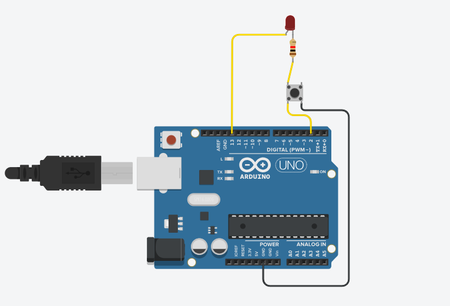
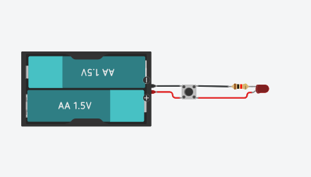

Mini Lanterna com LED


Objetivo
Criar uma lanterna simples que acende um LED reutilizado, controlado por um botão, usando o Arduino.
Materiais Necessários
- Arduino Uno (ou similar) - 1 unidade
- LED reutilizado - 1 unidade
- Resistor 220Ω - 1 unidade
- Botão reutilizado - 1 unidade
- Jumpers - Alguns
- Protoboard - 1 unidade
- Bateria reutilizada (opcional) - 1 unidade
- Cabo USB (ou suporte para bateria) - 1 unidade
Observação: A bateria pode ser usada para alimentar o Arduino por um conector externo ou via módulo 5V se tiver.
Passo a Passo da Montagem
Esquema das ligações:
Botão:
- Um lado do botão vai no GND.
- Outro lado do botão vai no pino digital 2 do Arduino.
- Usa-se o resistor pull-up interno do Arduino.
LED:
- Anodo (perna maior) do LED no pino digital 13.
- Cátodo do LED no GND com resistor de 220Ω em série.
Código
// Definição dos pinos
const int ledPin = 13; // LED no pino 13
const int buttonPin = 2; // Botão no pino 2
void setup() {
pinMode(ledPin, OUTPUT); // Define o LED como saída
pinMode(buttonPin, INPUT_PULLUP); // Botão como entrada com resistor interno pull-up
}
void loop() {
int estadoBotao = digitalRead(buttonPin); // Lê o estado do botão
if (estadoBotao == LOW) {
// Se o botão estiver pressionado (LOW por causa do pull-up)
digitalWrite(ledPin, HIGH); // Acende o LED
} else {
digitalWrite(ledPin, LOW); // Apaga o LED
}
}
Explicação do Funcionamento
Este projeto funciona da seguinte maneira:
- O botão está normalmente em HIGH (graças ao INPUT_PULLUP).
- Ao pressionar, ele conecta ao GND (LOW), então o LED acende.
- Soltou o botão, volta pra HIGH, LED apaga.
Exemplo de entrada/saída:
- Botão pressionado: LED acende.
- Botão solto: LED apaga.
Vídeo Demonstrativo
Dicas e Variações
Considerações importantes para este projeto:
- Teste o LED antes (alguns são RGB ou precisam de mais tensão).
- Sempre use resistor para proteger o LED.
- Se for usar uma bateria reutilizada, pode ser necessário um módulo regulador para converter de 3.7V para 5V para o Arduino (ex: módulo boost com saída USB).
- Se quiser que o LED fique aceso com um toque e apague com outro, é possível modificar o código para usar estado de botão com toggle.